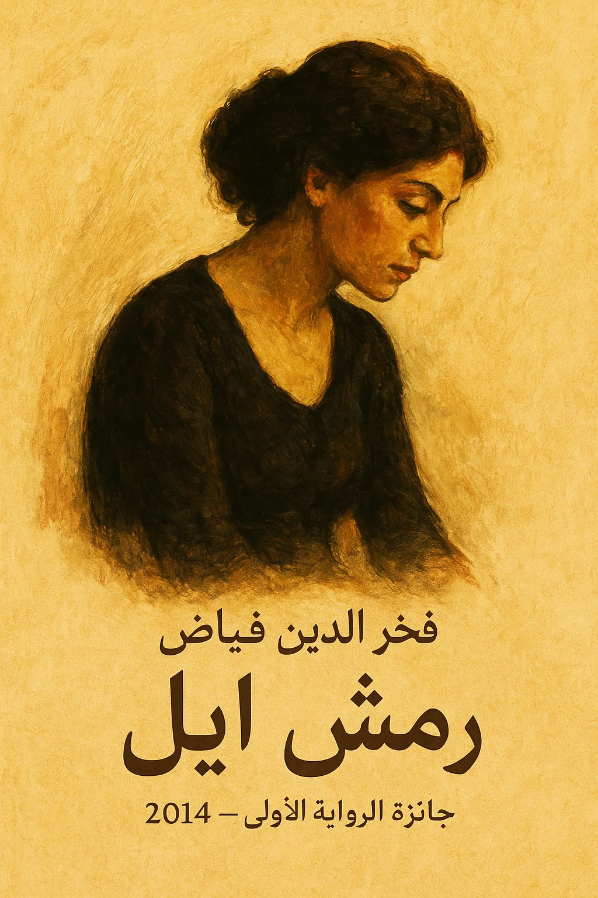

رواية رمش إيل
فخر الدين فياض — رواية درامية نفسية ممتلئة بالعاطفة والدهشة وصراع الإنسان مع ذاته ومحيطه.
لم يجدها نائمة مرة واحدة.. امرأة يضوع عبيرها في سكون الليل.. تستحم وتعطر جسدها بزهر البرتقال أو الليمون.. وأحياناً بماء الجوري أو الياسمين...
«وُلِدْتُ من رحم امرأة ميتة».. بعد أن تشبَّثْتُ بدفئه أكثر مما ينبغي؛ خوفاً من جحيم أصوات متوحشة، ومشاعر غريبة لامرأة تلد على ظهر حيوان عنيد...